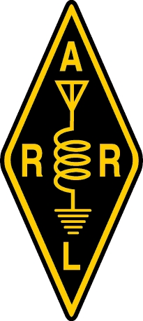

Hays-Caldwell Amateur Radio Club
To learn more:
 The Hays-Caldwell Amateur Radio Club is a club for ham
operators. We meet every third Saturday of each month at the
Kyle Public Safety Center, 1700 Kohlers Crossing, Kyle, TX 78640, at
10:00 AM. Our club supports a variety of interests, including emergency
communication (ARES, Red Cross, CERT, etc.), hams helping hams (Elmer's),
and occasional social events. We partner with the Austin and Central Texas
ARRL and ARES groups. Our dedicated club members are eager to assist new
members with information and a helping hand. A PDF brochure with more
information about the club can be found
here.
The Hays-Caldwell Amateur Radio Club is a club for ham
operators. We meet every third Saturday of each month at the
Kyle Public Safety Center, 1700 Kohlers Crossing, Kyle, TX 78640, at
10:00 AM. Our club supports a variety of interests, including emergency
communication (ARES, Red Cross, CERT, etc.), hams helping hams (Elmer's),
and occasional social events. We partner with the Austin and Central Texas
ARRL and ARES groups. Our dedicated club members are eager to assist new
members with information and a helping hand. A PDF brochure with more
information about the club can be found
here.
ARRL - American Radio Relay League

ARRL is the national association for Amateur Radio in the US. Founded in 1914 by Hiram Percy Maxim as The American Radio Relay League, ARRL is a noncommercial organization of radio amateurs. ARRL numbers within its ranks the vast majority of active radio amateurs in the nation and has a proud history of achievement as the standard-bearer in amateur affairs. ARRL's underpinnings as Amateur Radio's witness, partner and forum are defined by five pillars: Public Service, Advocacy, Education, Technology, and Membership.
For more information, click here.
ARES - Amateur Radio Emergency Service
The Amateur Radio Emergency Service® (ARES) consists of licensed amateurs who have voluntarily registered their qualifications and equipment, with their local ARES leadership, for communications duty in the public service when disaster strikes.
For more information, click here.